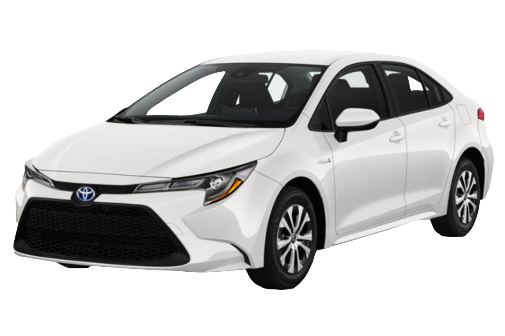
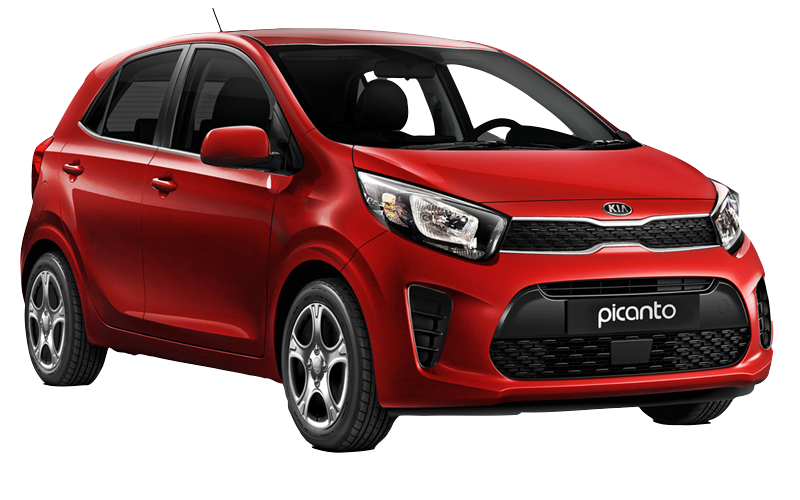
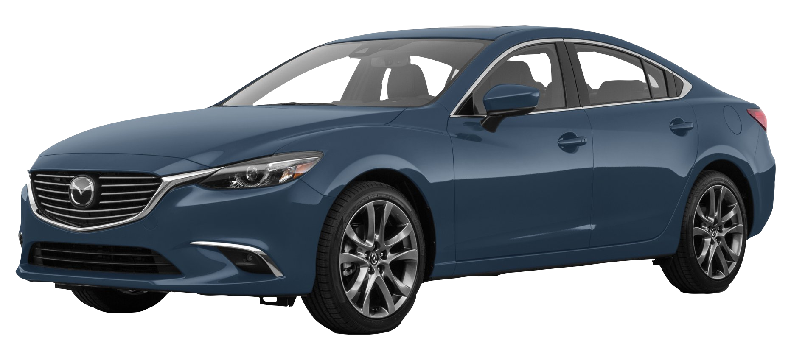
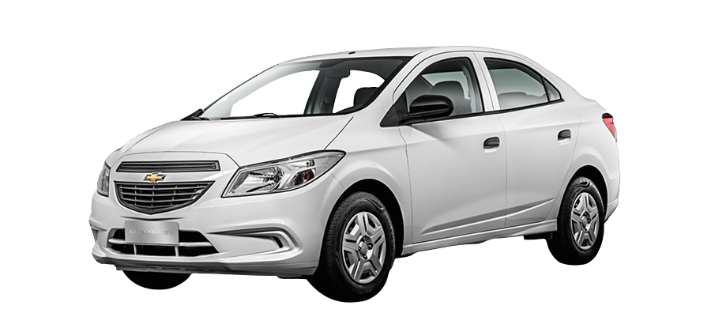
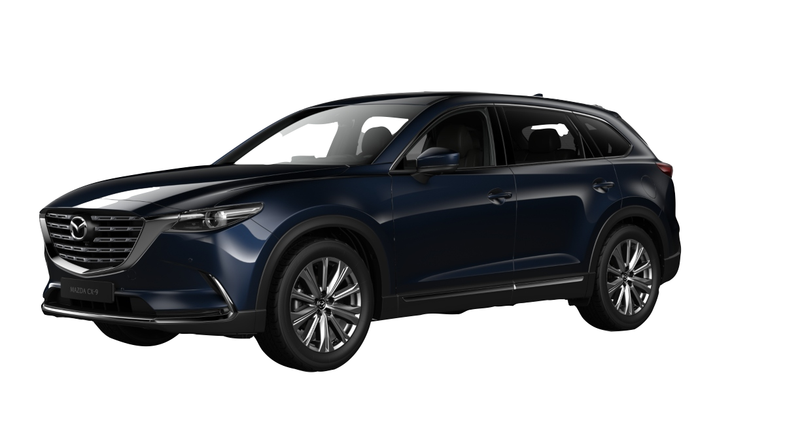
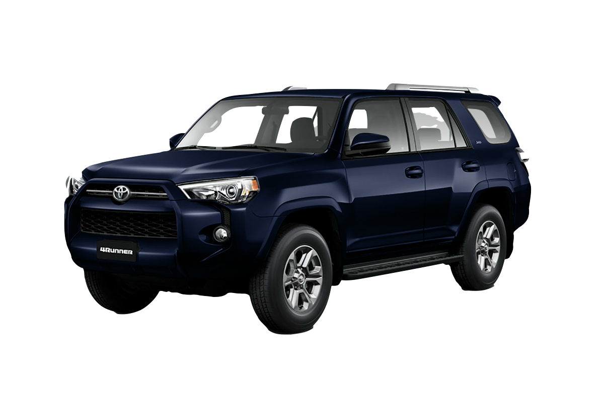
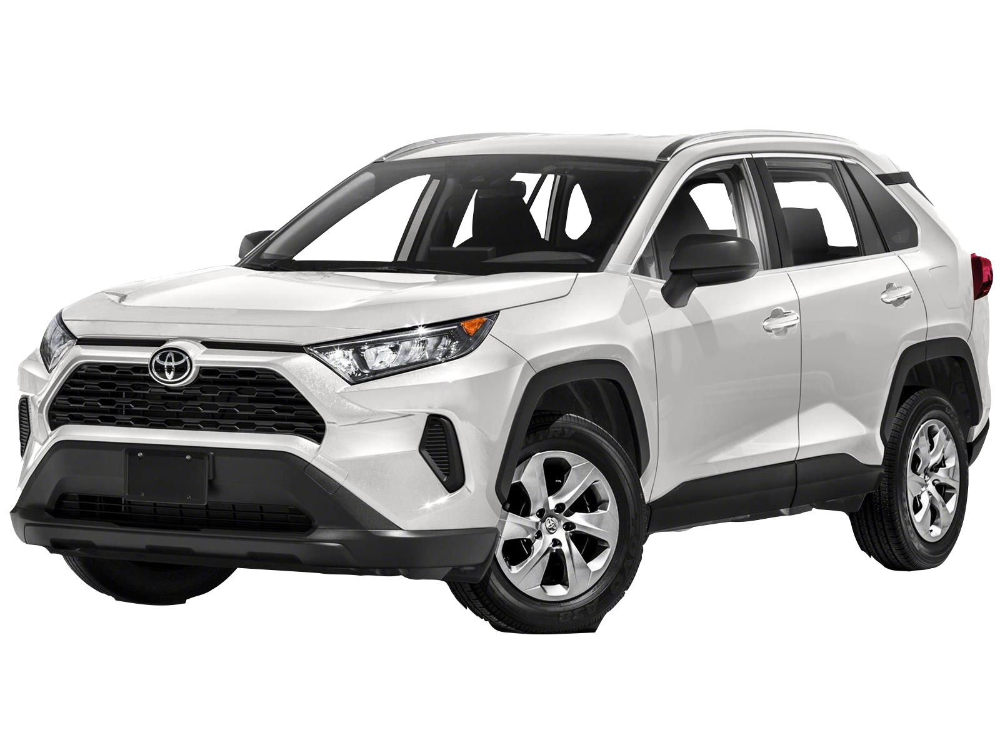
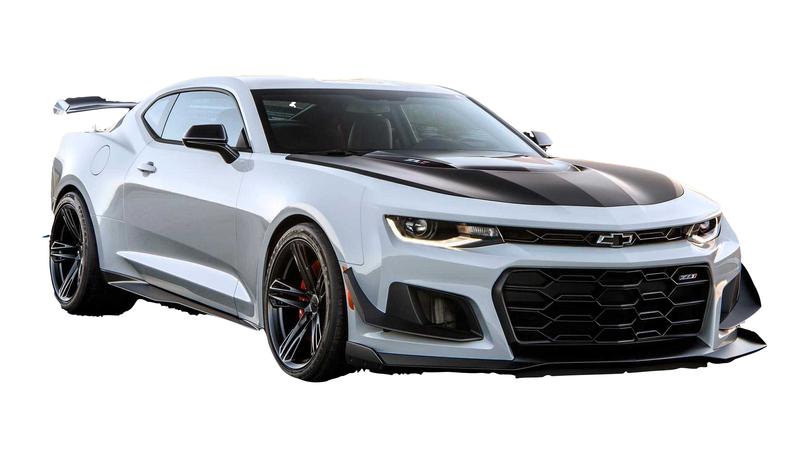
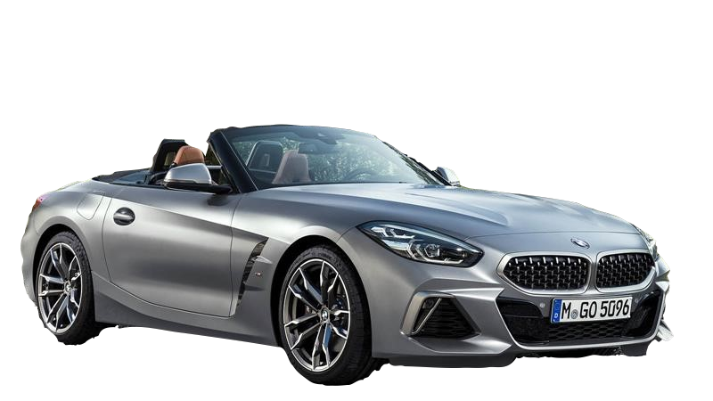
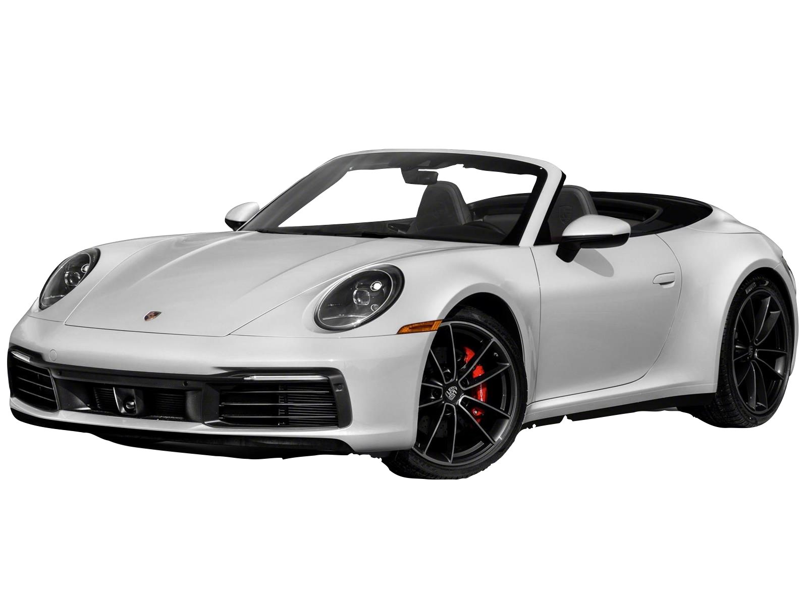

TIPO
MARCA
CARACTERISTICAS GENERALES
PRECIO
IMAGEN

|
TIPO |
MARCA |
CARACTERISTICAS GENERALES |
PRECIO |
IMAGEN |
| SEDAN | TOYOTA COROLLA | Se compone de una cabina de alta integridad con zonas de deformación frontal y trasera que ayudan a absorber la energía del impacto en una colisión. También incorpora un concepto de compatibilidad que persigue la coexistencia de vehículos de diferentes pesos y alturas en una colisión | Q57,990 |  |
|---|---|---|---|---|
| KIA PICANTO | Cuenta con una longitud de 3.595 metros, una anchura de 1.595 mm y una altura de 1.480 mm siendo su maletero de 200 litros, y contando por tanto con una mayor capacidad de carga que el Renault Twingo, el Peugeot 108 o el Fiat 500. | Q79,990 |  | |
| MAZDA 6 | El Mazda 6 es un cinco plazas que se ofrece con carrocerías sedán de cuatro puertas, liftback de cinco puertas y familiar de cinco puertas. | Q54,990.00 |  | |
| CHEVROLET AVEO | Este automóvil tiene motor de 4 cilindros a gasolina, tracción delantera, de cinco puertas- cuatro para pasajeros y una para portaequipajes, motor de 1200cc hasta 1800cc, con potencias que van desde los 73CV (caballos de vapor) hasta los 103CV para los 1800cc. | Q. 17,900.00 |  | |
| CAMIONETA | Mazda CX9 | Es un automóvil todoterreno del segmento E producido por el fabricante de japonés Mazda desde octubre de 2006. El CX-9 fue presentado al público en el Salón del Automóvil de New York de 2005, y se fabrica en Hiroshima, Japón. A diferencia del Mazda CX-7, el CX-9 tiene siete plazas distribuidas en tres filas. El CX-9 compite en el mercado contra los Hyundai Santa Fe, Kia Sorento, Toyota Highlander, Honda Pilot, Volkswagen Atlas, entre otras. | Q317,990 |  |
| TOYOTA RUNNER | Cuenta con un sistema avanzado de Airbag para conductor y acompañante, TAP para conductor y pasajero delantero, airbags laterales delanteros montados en el asiento, airbags para rodilla para el conductor y el pasajero delantero y todos los airbags de cortina laterales (RSCA) con interruptor de corte. | Q.317,000 |  | |
| RAV4 | Ofrece una amplia gama de sistemas de seguridad: Frenos ABS y EBD, control de estabilidad VSC y HAC, 7 bolsas de aire y el innovador Toyota Safety Sense* que ayuda al conductor mediante sensores a reaccionar ante posibles peligros en carretera. ... Siempre preste atención a su alrededor y conduzca con seguridad. | Q.329,000 |  | |
| DEPORTIVOS | CAMARO | La Trailblazer 2021 es audaz, espaciosa y tiene la tecnología y la capacidad para que puedas salir y llegar a donde quieras. Y como tienes varios modelos para elegir, tus opciones de estilo son tan amplias como el camino que tienes por delante. | Q.360,000 |  |
| MUSTANG | El Ford Mustang tiene una longitud de 4.784 mm, 1.381 mm de altura, un ancho de 1.916 mm y una capacidad de carga en el maletero de 408 litros. Se trata por tanto de uno de los coches más anchos del mercado, realzando así la sensación de "músculo" de su carrocería. Por su parte, los diseñadores de la marca han conseguido actualizar el diseño del modelo sin que el paso del tiempo resulte dañino: sigue siendo y, sobre todo, sigue pareciendo un Ford Mustang. | Q.310,000 | |
|
| BMW Z4 | El BMW Z4 es un automóvil deportivo de lujo producido por el fabricante alemán BMW. Liderado en aquel momento por el diseñador Chris Bangle, El BMW Z4 es el sucesor del BMW Z3. Fue Presentado en otoño de 2002 y su producción se inició en el 2003. | Q.40,000.00 |  | |
| PORSCHE | El Porsche 911 es un automóvil deportivo de lujo producido por el fabricante alemán Porsche AG, desde 1964. A través de los años, ha pasado por varias regeneraciones. De todas formas, muchas de las características del modelo original se conservan, como su configuración «todo atrás», su carrocería coupé fastback, el motor bóxer de seis cilindros y un interior con configuración 2+2 plazas. | Q.1,903,266 |  |